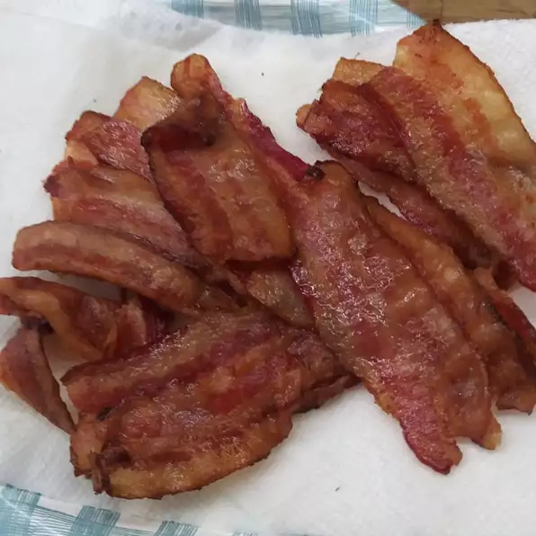

Bacon

Description
Get crisp bacon without curling, looking great on a plate for breakfast!
Ingredients
Steps:
- Line a baking sheet with aluminium foil.
- Arrange bacon in single layer on foil.
- Bake in oven at 175 degrees Celsius for 10-15 minutes or until crispy.